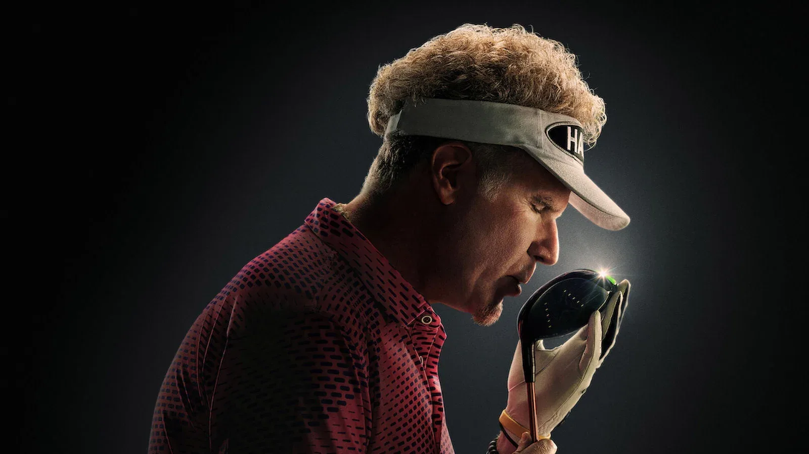
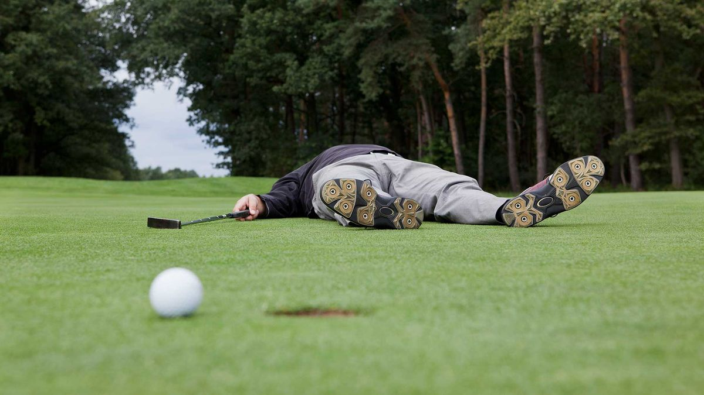
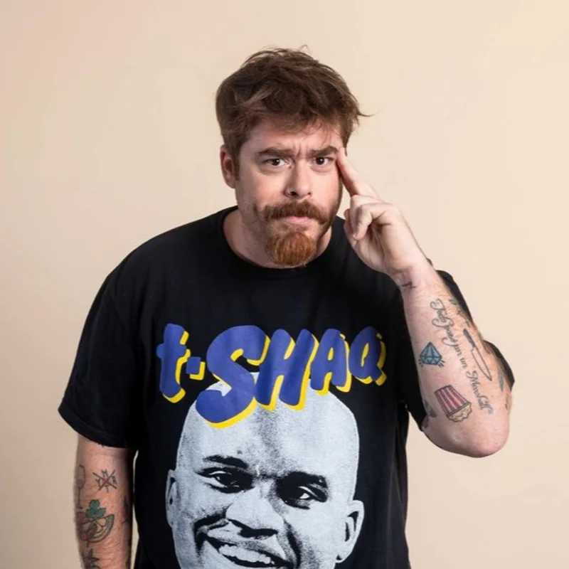
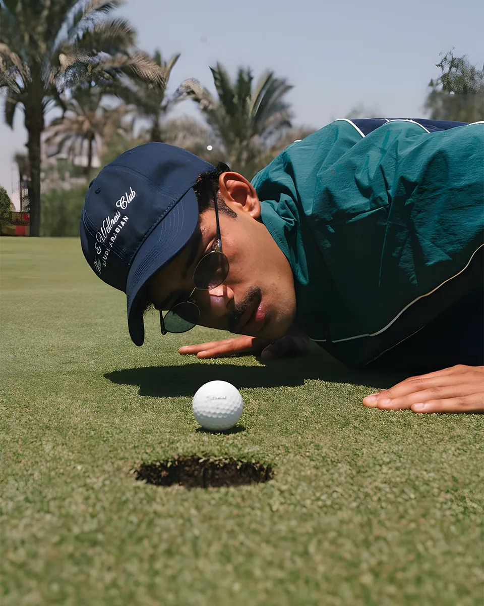
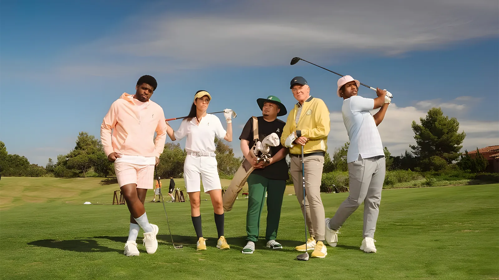
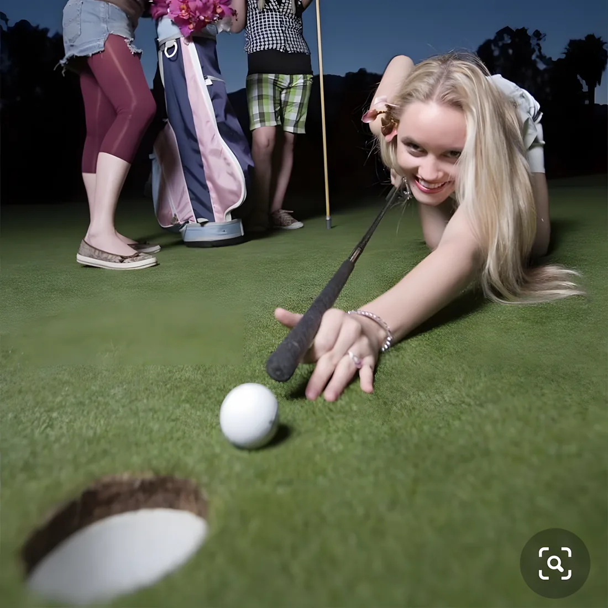
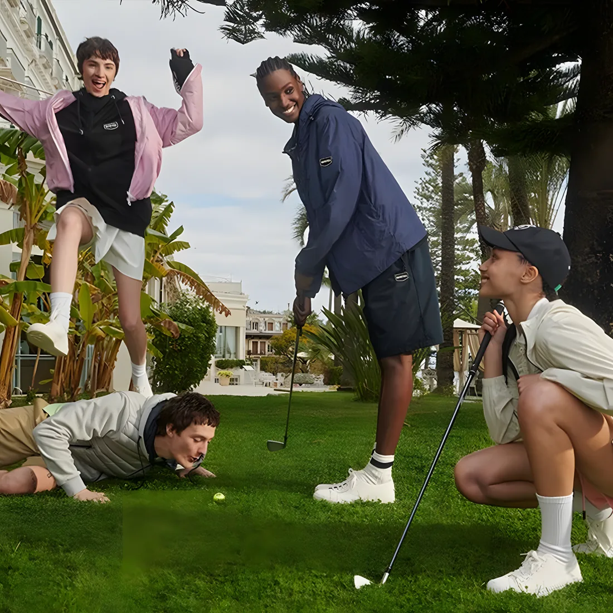
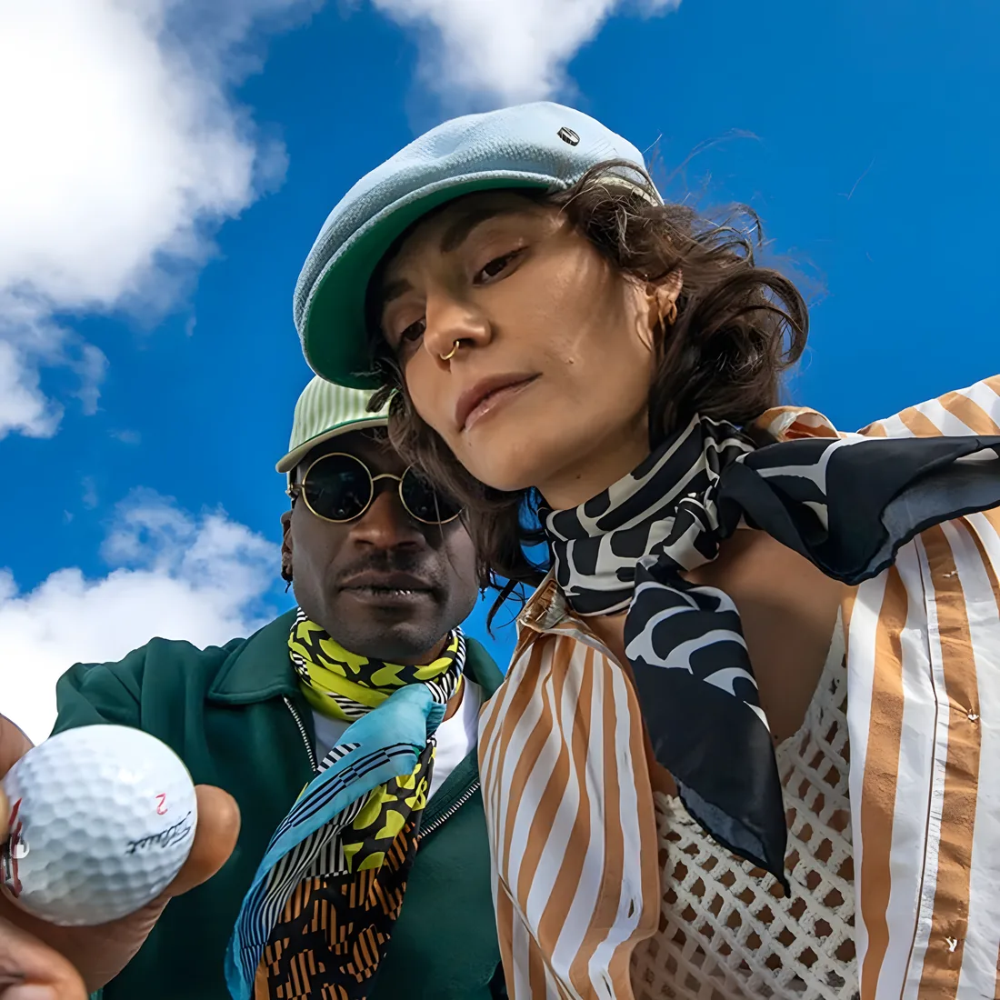
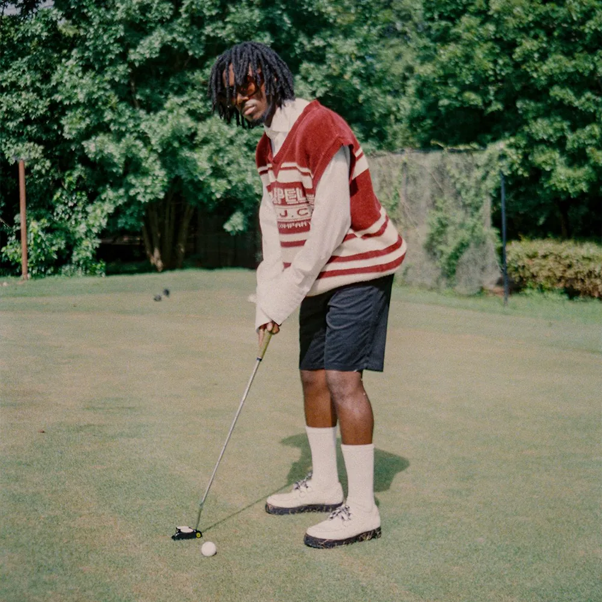
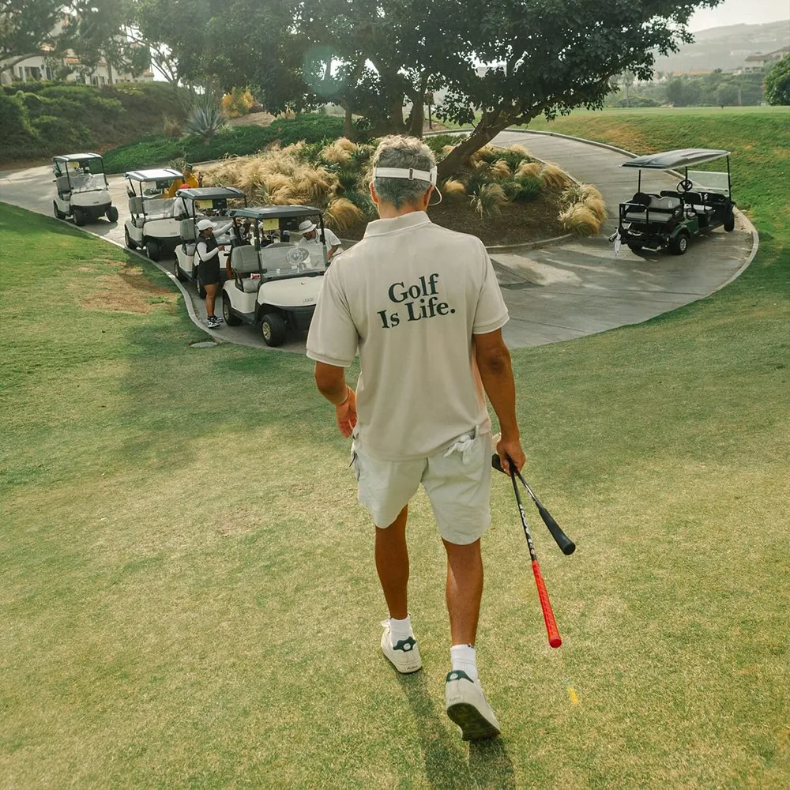

Una campaña social-first que convierte el deporte más incomprendido del mundo en el contenido más compartible de la previa al estreno.
Nadie entiende el handicap, las reglas, los códigos, el scoring, la ropa, ni por qué alguien se obsesiona cinco horas con una pelotita. Esa confusión es insoportable para quien juega, y oro puro para todos los demás. The Hawk no necesita explicar golf. Necesita reírse de él.

El malentendido del golf ya es un clásico de internet argentino. No lo inventamos: lo continuamos. Y su protagonista, Yanina Latorre, es parte de la dupla que proponemos.
El corazón del formato es ese choque: el que no entiende nada contra el que intenta explicar lo inexplicable. Y ya tiene a los protagonistas ideales.
Una campaña en dos fases. Primero instalamos el concepto en redes con contenido corto y caótico. Después lo bajamos a la cancha con un torneo entertainment-first. El objetivo es uno: transformar The Hawk de "una serie de golf" a "un fenómeno de entretenimiento social" antes del estreno.
Contenido corto que instala el concepto en redes.
Un torneo de creadores que se juega y se transmite en vivo.
El streaming joven y la TV prime time, juntos. Dos que no tienen idea de golf, chocando en cámara. Y un detalle que no se puede comprar: una de las dos ya es, literalmente, el meme del golf en Argentina.

Dueño de OLGA y la cara del humor en streaming. Conduce los contenidos más escuchados del país y domina el timing digital y el absurdo. Trae a la audiencia joven y la cultura internet.
La voz más filosa de la TV prime time, reacción pura y alcance masivo. Su bonus es imbatible: el "no tengo el palo adecuado" del golf viral es ella.
Streaming joven × prime time masivo: las dos audiencias que The Hawk necesita conectar, en una sola dupla. Y un meme del golf que ya existe, listo para continuar.
El motor no es el famoso: es el choque entre el que no entiende nada y el que intenta explicarlo. Con eso alcanza para generar clips infinitos. La dupla ideal es Migue + Yanina, y el formato es lo bastante simple como para adaptarse a disponibilidad y presupuesto.
Reacciona, se frustra, rompe la lógica del deporte. El motor del humor.
Pone seriedad y códigos sobre algo absurdo. Cuanto más se esfuerza, más gracioso es el contraste.
Cultura internet vs credibilidad deportiva.
Pura improvisación y caos, más under y ágil.
Una cara estable y otra nueva por episodio.
Serie de piezas cortas para TikTok, Reels, Shorts y YouTube. Cortes de 30, 60 y 90 segundos. Grabado en un driving range: visualmente simple, frustración inmediata, muchos clips por jornada y cero necesidad de jugar golf real. Contenido basado en frustración, reacción, humor, ego, competitividad y cultura internet.

¿Qué mierda es el handicap?
¿Cómo que mientras peor jugás más golpes te dan?
¿Por qué existen 14 palos? ¿No podían hacer uno solo?
¿Por qué nadie puede hablar? ¿Esto es un deporte o una biblioteca?
¿Por qué el golf dura 5 horas? ¿Quién aprobó esto?
El deporte más frustrante del planeta.
Le dije que emboque y me contestó que no tenía el palo adecuado.
Gasté el sueldo en ropa de golf y todavía no le pegué a la pelota.
Probamos el golf y casi se termina una amistad.
Ranking: ¿qué es más difícil, el golf o entender el handicap?
Reglas del golf explicadas por alguien que las inventó recién.
Le pusimos un mic al que más se frustra. Esto fue impublicable.
Una sola cosa: un torneo de golf jugado por streamers y gamers desde el humor, transmitido en vivo y convertido en máquina de clips. El golf es la excusa, el malentendido es el show. No hay score profesional: hay caos, challenges, trash talk y reacción. Es un formato que ya rompió todo en otros deportes, La Velada del Año de Ibai hizo 9,3 millones de espectadores en simultáneo.

Streamers y gamers en equipos, jugando desde la competencia y el papelón. El que no tiene idea es el protagonista.
Transmisión simultánea en los canales de los creadores y en Netflix. El alcance combinado de todos, en un mismo evento.
Una jornada se trocea en decenas de piezas verticales que siguen rindiendo después del estreno.
Maneja el caos y el humor desde el centro del estudio.
Narra lo absurdo con solemnidad de golf real. El contraste es el chiste.
Reacción sin filtro desde el call. La que ya vivió el malentendido del golf.
Seleccionaremos perfiles del mundo del streaming y del espectáculo que sean acordes a los roles que planteamos, elegidos por su química, su llegada y su capacidad de generar contenido en vivo.
Lo que no cambia es el formato: equipos de creadores que no tienen idea de golf, compitiendo en vivo.
El objetivo no es jugar bien: es generar momentos virales, clips y conversación. Una jornada, una cancha, multicámara y el chat decidiendo en vivo. Barato de producir para el volumen de contenido que deja.
El golf dejó de ser solo country club. Hoy cruza moda, lifestyle, streetwear, luxury casual y meme culture. Esa es la estética de la campaña: premium pero divertida, irónica pero cuidada.





La campaña no promociona The Hawk: la convierte en conversación cultural antes del estreno. Genera awareness, memes, shares, relevancia y, lo más importante, descubrimiento social en la audiencia que no busca "una serie de golf" pero sí comparte "el video del tipo que no entiende el golf".
Nota de honestidad: hablamos de alcance potencial y conversación proyectada, no de números garantizados. Preferimos ser claros con eso: genera más confianza que prometer de más.
Recibís un problema. Te devolvemos una solución 360, llave en mano.